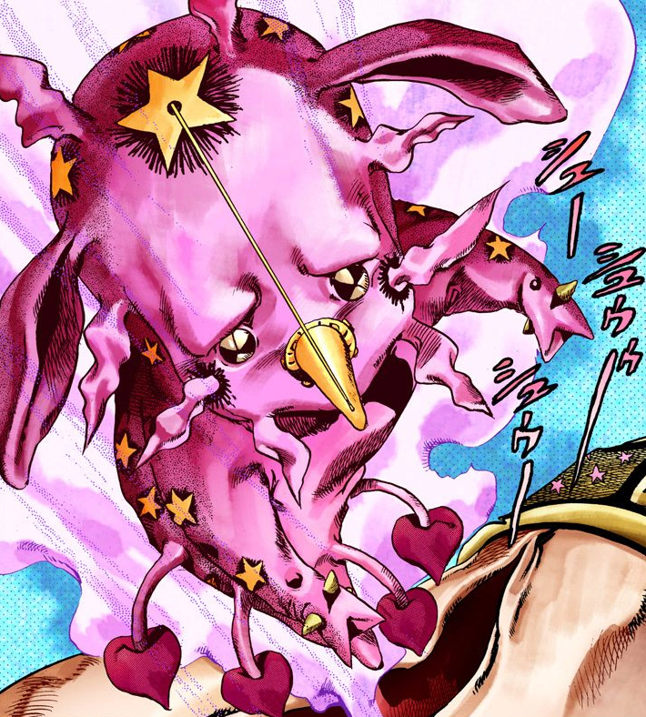
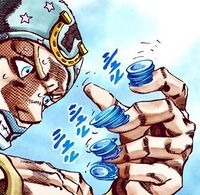
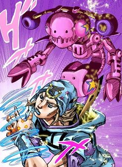
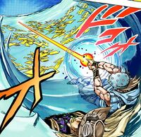
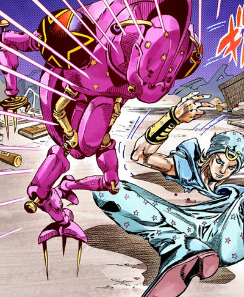
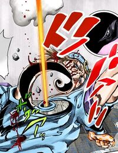
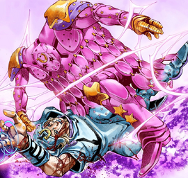
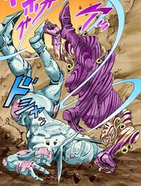
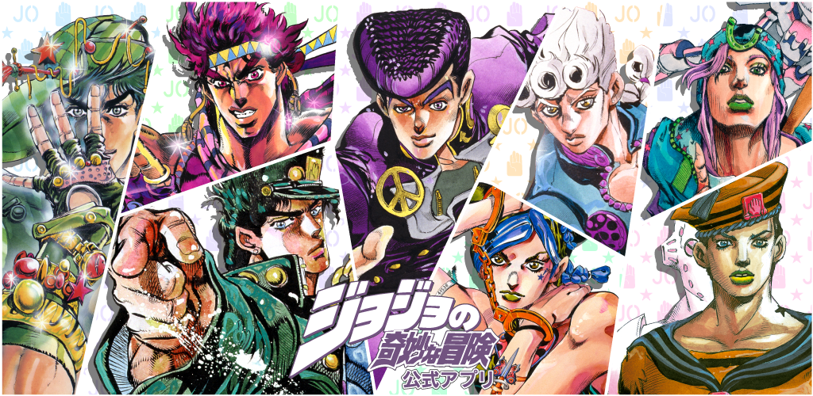

About JoJo's
JoJo's Bizarre Adventure (ジョジョの奇妙な冒険, Jojo no Kimyō na Bōken) is a Japanese manga series written and illustrated by Hirohiko Araki. The saga began its publication in the magazine Weekly Shōnen Jump in 1987 and has continued in the magazine Ultra Jump since 2005.
The universe of JoJo's Bizarre Adventure is a reflection of the real world with the added existence of supernatural forces and beings. In this setting, some people are capable of transforming their inner spiritual power into a Stand (スタンド, Sutando); another significant form of energy is Hamon (波紋, "Ripple"), a martial arts technique that allows its user to focus bodily energy into sunlight via controlled breathing. The narrative of JoJo's Bizarre Adventure is split into parts with independent stories and different characters. Each of the series' protagonists is a member of the Joestar family, whose mainline descendants possess a star-shaped birthmark above their left shoulder blade and a name that can be abbreviated to the titular "JoJo".[a] The first six parts take place within a single continuity whose generational conflict stems from the rivalry between Jonathan Joestar and Dio Brando, while the latter three parts take place in an alternate universe where the Joestar family tree is heavily altered.
What Is A Stand?
A Stand (スタンド Sutando) is a visual manifestation of life energy (in other words, the manifestation of the soul of the user). A Stand is an entity psychically generated by its owner, referred to as a Stand User (スタンド使い Sutando Tsukai). It generally presents itself as a figure hovering over or near the user and possesses abilities beyond that of an ordinary human, which, depending on the Stand User, can be wielded for good or evil. Stands are defined as personifications of "life energy" whose abilities are given visual form. When first presented, the term is written as 幽波紋スタンド, with furigana added to change the pronunciation of what literally means "ghostly Ripple" (幽波紋, Yūhamon) in kanji. According to Joseph Joestar, the name "Stand" comes from the fact the vast majority of Stands usually manifest themselves standing next to the user: ready to act on their command. The term 立ち向かうものスタンド has also been used by Mountain Tim to describe Stands, which translates literally to "that which stands and confronts" (立ち向かうもの, Tachimukau Mono).
Stands Evolution
Requiem
Gold Experience Requiem (StandUser-Giorno Giovana)
Gold Experience Requiem is a close-range Requiem Stand that boasts an incredible increase in both speed and power compared to its previous form and it's ability can't be compared to normal stand stats. Created by the Arrow and born from Giorno's intense desire to defeat King Crimson and exact revenge on Diavolo, it wields the arcane power of reverting anything to "zero", effectively undoing their actions; a power that even triumphs over the time erasure/nullification ability of King Crimson. Gold Experience Requiem is powerful enough as a Stand that it permits Giorno to levitate with it.Due to its increased power, Gold Experience Requiem has the ability to fire a stone fast enough that it ceases to be visible to the human eye, and has enough power behind it to penetrate through a hand and destroy part of a building.
Abilities

Return To Zero/Nullification
Gold Experience Requiem's ultimate ability is to revert all actions and willpower back to the state of "zero", completely nullifying them and preventing them from becoming "real". For simplicity's sake, it's comparable to performing Ctrl-Z (undo), completely denying any causality. This can be seen as a direct opposite to King Crimson. As instead of undoing the act and leaving the effect like King Crimson does, Gold Experience Requiem removes the effect from the cause.

Life Giver
Despite its transformation, Gold Experience Requiem appears to have not only retained its life-giving abilities but said abilities are noted to be vastly more potent than before. This is demonstrated briefly when Requiem fires a small stone at high-speed with enough power to pierce Diavolo's hand before it transforms into deadly scorpions that attack him.
Over Heaven
The World Over Heaven (StandUser-Dio)
As a perfected version of The World, The World Over Heaven bears a heavy resemblance to its initial form, being a tall, muscular humanoid Stand. Its most distinctive feature is a headpiece covering the upper portion of its face down to the nose, the top of it slanting at a steep angle from the base of its forehead to a peak above the rear of its head. A pair of ridged cables extend from the back of this headpiece and connect to the Stand's ears, forming rings on the sides of its neck. The World also bears a pair of diving cylinders on its back. A pair of tank treads run from either end of its waist across its shoulders. Its abdomen and crotch are topped by heart-shaped emblems, armor plates adorn its wrists and shins, and its clogs bear curved, sharply-pointed toes, similar to those of its user.
Abilities

Reality Overwrite
The World Over Heaven possesses the invincible power to overwrite the very reality of anything it strikes with its fists. The extent of this ability appears to be limitless, as DIO is capable of exploiting this power to absorb souls, overwrite others' memories and wills, heal himself of any injury, resurrect the dead, summon lightning at will, and completely negate any ability used against him, including the infinite rotation of Tusk ACT4 and the nullification ability of Gold Experience Requiem.

Time Stop
The World Over Heaven also retains its original ability, which allows DIO to stop the flow of time for everyone besides himself. However, due to DIO's confidence in his Stand's new power, he primarily uses this ability to teleport away from danger in preparation for larger-scale attacks. As such, the maximum duration of The World Over Heaven's time stop remains unknown.
Acts
TUSK ACT 1-4 (StandUser-JohnnyJoestar)
Tusk Act 1
Initially named "Tusk" as it was the first form that Johnny sees, Tusk ACT1 is the Stand's base form. It is referred to as the guardian of the Left Arm of the Saint's Corpse. ACT1 resembles a small, neotenous animal. Its head is of equal or slightly greater size than its body, and it floats with two short, vague, and inarticulate arms and one such leg. Its posterior is marked somewhat irregularly by small stars, behind which dark circles radiate to their points; while four tendrils droop from the base of its trunk to the approximate length of its leg, bearing heart shapes. On its head, it bears two long, mammalian ears; small, reflective black eyes, under a brow of a troubled angle; a large star at the top of its forehead, behind which a dark circle radiates to its points, and from the center of which a string links with the tip of a cone fastened to the region of its nose. Eight wavering vestiges emanate from its head laterally: Two above; four from its sides, the lower of which, at its cheeks, are also surrounded by a dark circle; and on each side of its chin. It was designed with an axolotl in mind.
Abilities
Spinning Nails
Tusk ACT1 grants Johnny the ability to imbue his nails with the Spin.Johnny is able to make his fingernails, and later toenails, spin themselves at a high velocity and shoot them like bullets up to 10 meters. The nails have incredible cutting power, capable of slicing through rock, cutting limbs clean off, or carving a tree into a humanoid shape within seconds. However, they do not possess the power to cut through metal. Once Johnny shoots a fingernail, they take a short time to grow back. When he puts the nails against the ground, their rotating movement can rapidly carry Johnny away from his current position. He can also use his nails as short-range cutting weapons. The spinning nails emit a faint buzzing sound, similar to that of a wasp, according to Oyecomova.
Tusk Act 2
Tusk ACT2 is the first evolved form of Tusk, accessed when Johnny makes progress in the technique of the Spin and uses the Golden Rectangle. Mechanically, ACT2 possesses a small, sturdy torso and arms, greater in proportion to its head. From its head hang two barrel-shaped objects. A barrel-like unit the size of its head is suspended at the base of a short, flat spine. Araki added some elements to make it unclear whether it's animal or machine, like a traditional Stand. string links with the tip of a cone fastened to the region of its nose. Eight wavering vestiges emanate from its head laterally: Two above; four from its sides, the lower of which, at its cheeks, are also surrounded by a dark circle; and on each side of its chin. It was designed with an axolotl in mind.
Abilities
Golden Rectangle Nails
Once Johnny learns to imbue his fingernails with the Spin using the Golden Rectangle, it greatly enhances the basic properties of his shots. When Johnny activates Tusk, the fingernails now rotate around his fingers like an axis. Thus, when he shoots the fingernails, they possess a drilling property, which dramatically increases the power of the shots. For instance, one shot is able to blast away a large zone on impact. On the downside, the nails regrow considerably slower, and as such, Johnny must save his nails or he will find himself out of ammunition.
Tusk Act 3
Tusk ACT3 is the second evolution of Tusk, unlocked when Johnny witnesses Jesus counseling him and finds a renewed resolve in life. Although it is distinctly more human in shape, its head is still embedded into its body. ACT3 bears sharp spikes growing from both the underside of each of the three toes of its triangular feet and two from small, truncated, disc-shaped hands. On dark, spherical shoulders it bears the large, bold outline of a star; and from its upper lip to the rear of its head runs a tall, blade-like protrusion resembling a Mohawk. string links with the tip of a cone fastened to the region of its nose. Eight wavering vestiges emanate from its head laterally: Two above; four from its sides, the lower of which, at its cheeks, are also surrounded by a dark circle; and on each side of its chin. It was designed with an axolotl in mind.
Abilities
Spatial Wormhole
By shooting himself with a Spin-imbued fingernail with axial rotation, Johnny is able to suck his body into the hole it creates. The hole created by the nail shot, specifically the infinitely small rotating point at the end of the hole, becomes a special space which, due to the infinite proportion of Johnny's spin, is also infinite and becomes a wormhole through space. A tailpiece theorizes the space as a boundary between dimensions. Johnny alone can enter that "location" and anything other than him will be cut. This ability is limited by how long the holes can persist in the world. By moving the hole while his body is inside, Johnny can quickly reposition himself or key parts of him, such as his shooting hands, and attack from unexpected angles. Because the hole functions as a wormhole, anything sent into it will exit through the other end, although it will be severed. This includes enemy attacks. Gyro deems this ability a new level of mastery over the Spin that even the Zeppeli Family hasn't accessed with their Steel Balls.
Tusk Act 4
Tusk ACT4 is the highest evolution of Tusk, accessed only when Johnny uses the Golden Spin. ACT4 is of humanoid shape and broad or square build; of articulated legs, arms, hands, and fingers. Its head is mounted in the front of its chest, and from the bottom of its chest hangs to its ankles a vestment comprising strings of vertical ellipses. Like Johnny, it wears a horseshoe on its forehead. The inside of its curtain-like body is hollow, and its face can move around like the mono-eye of MS-05 Zaku I from Mobile Suit Gundam. The principle behind Tusk ACT4 derives from the use of the Golden Spin, which requires Johnny to make his horse run in its "natural state". By doing so, the horse produces rotational energy in the form of the Golden Rectangle and by combining it with Tusk, Johnny is able to release infinite rotational energy. He can, however, shortcut the process as a last-ditch effort, using a Steel Ball to temporarily galvanize his horse's movement. Tusk ACT4 is thus one of the most powerful Stands in the series due to the infinite energy behind it but is incredibly difficult to deploy as a trade-off. Otherwise, Tusk ACT4 displays the physical abilities of a close-range Stand and is capable of pummeling Dirty Deeds Done Dirt Cheap.
Abilities
Infinite Rotation
Tusk ACT4 embodies the infinite energy and rotation of the Golden Spin and is able to deploy it in various ways. Following the principle of the Golden Spin, the energy wielded and embodied by Tusk ACT4 is infinite, allowing a wide array of otherwise impossible feats. One of the first abilities displayed by Tusk ACT4 is to be able to break through the dimensional barrier of D4C Love Train and enter the space in which Valentine hides. Moreover, Tusk ACT4 defies the laws of gravity and therefore can move slightly and probably still influence Diego during the stopped time. The damage caused by the rotation is stated to be probably infinite as well. Like with ACT2 and ACT3, the energy of the Spin can persist inside objects even if Johnny misses a nail shot, and can be redirected toward a target. If ACT4 touches someone, it imbues the target with an infinite spinning motion. Not only does part of the body separate to spin, everything down to individual cells spin on themselves, greatly distorting the shape of the victim. Eventually, the targets are disintegrated by the rotation and according to Diego, sent to another dimension. The Spin goes on forever and never leaves the person or their Stand, forcing them to return to the place where they were hit or its equivalent in each parallel dimension, thus Funny Valentine was not able to escape it despite switching dimensions and/or bodies, always returning to the underground location in which he was hit. If someone uses a tool, like a carriage, to get away from the location, the Spin will imbue itself into the tool and destroy it, forcing the target back into their location. The rotation won't end unless Johnny shoots the target with a similar rotation that is spinning in the opposite direction, resulting in the two of them canceling each other out. Tusk ACT4 can also apply the Spin's energy more similarly to its previous forms and directly open a large space where there was none, as was shown in Johnny's battle with Diego Brando during which the Stand physically tears open a hole through the ground and enters the sewers with his horse. The Spin is also transferable between objects, as the Parallel World Diego cut his leg off and threw it to Johnny, transferring the infinite rotation to its user. Another example is when Funny Valentine went into a passing car trying to escape from Tusk; the infinite rotation destroyed the car near-instantaneously and returned to Valentine.
Main Characters
- Jonathan Joestar P1(Phantom Blood)
- Joseph Joestar P2(Battle Tendecy)
- Jotaro Kujo P3(Stardust Crusaders)
- Josuke Higashikata P4(Diamond Is Unbreakable)
- Giorno Giovana P5(Vento Aureo)
- Jolyne Cujoh P6(Stone Ocean)
- Johny Joestar P7(Steel Ball Run)
- Josuke Higashikata P8(JoJolion)
